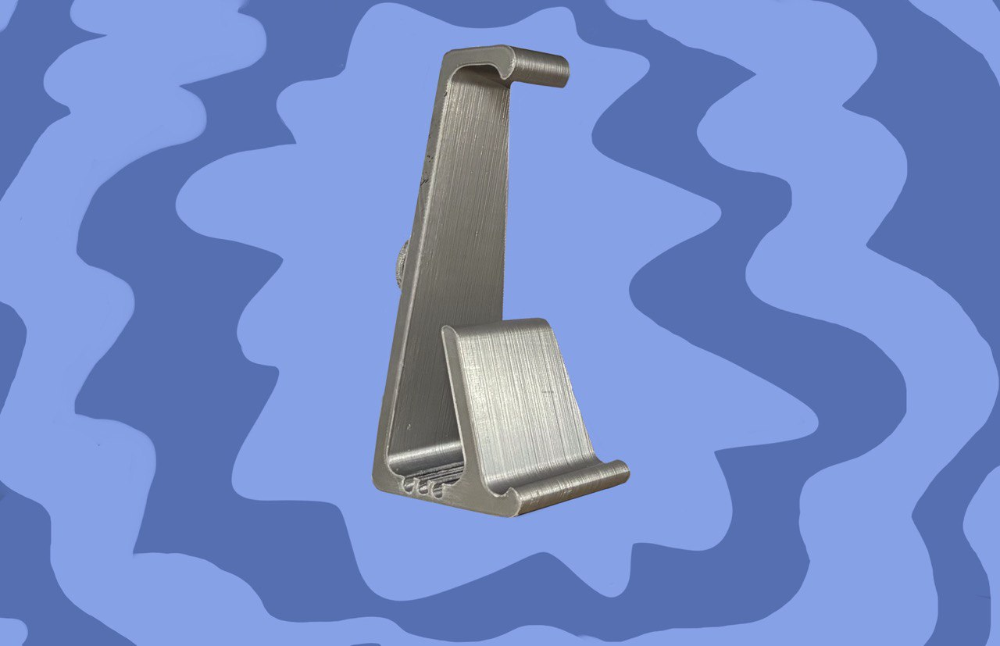

Discover
FreeHand is a project born from learning and shaped by meticulous work. Created to merge functionality with modern design solutions, it embodies the idea that even simple objects can be practical, aesthetically pleasing, and thoughtfully crafted down to the last detail.
Thanks to 3D printing, the stand is easy to produce with minimal resources, making it accessible for self-production or small-scale manufacturing. FreeHand is more than just a project – it’s a gesture of care for space, order, and everyday comfort.
